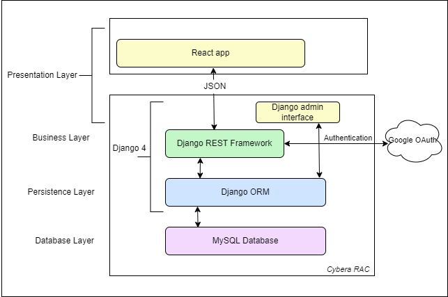

Software Design
Architecture Diagram
This is a short description of the architecture.

UML Class Diagram
This is a short description of logical entities of the domain in a UML diagram.

Sequence Diagrams
Multiple sequence diagrams depicting the most important scenarios.
Admin Sequence

User Sequence